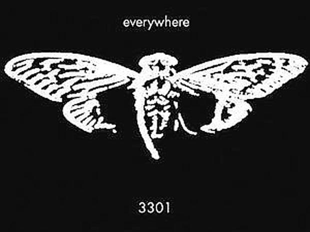

Cicada 3301
Global / Digital — Active since 2012

The Event
In early 2012, a series of cryptographic challenges appeared online, claiming to seek "highly intelligent individuals". The puzzles spanned data hide-and-seek, steganography, and physical locations worldwide, including GPS coordinates for posters with QR codes. To date, the organization behind it and their ultimate goal remain unknown.
Evidence Locker


Current Theories
The Archive examines the intersection of high-level math and secrecy.
- Recruitment Tool The complexity suggests a recruitment drive for intelligence agencies (like the NSA or GCHQ) or high-level private cybersecurity firms.
- Think Tank / Cult Alternative theories suggest an underground group of techno-libertarians or a cryptographic "cult" aiming to preserve digital privacy.